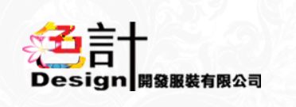

代工的三大機會:原料、創新、效率
因為環境機會較少，透過為一些品牌大廠代工，用自身擁有的特殊技術或機器做出不一樣的優勢，吸引客戶及消費者
優點:代工成本與一條龍服務成本較低、訂單來源較穩定、市場規模較大
缺點:容易受國際情勢影響
基本要求:生產速度要快、技術創新要快、反映客戶需求要快、原物料來源須穩定
客戶群:大型品牌廠、大型成衣加工廠


儒鴻

專精於機能服飾製造，而除了成衣代工外，自行切入「布料研發」，包含布料、染整、設計、成衣上下游的垂直整合，儒鴻都能提供服務，在針織領域發揮一條龍的最大效益。
特點:研發能力(配合地區環境變化運用不同材料，提供不同需求)
突出項目:上衣、褲子
代工所佔比例:50%~60%
客戶為Nike、Adidas、Under Armour等一線運動機能服飾品牌
垂直整合聚陽

為流行成衣製造商
特點:銷售價格接受度高、銷售反應速度快
跨足產品設計、快速3D打樣及原物料整合，直接提供客戶一站式採購服務
主打客群:青年、中年
項目比例:功能性服飾27%、時尚性服飾73%(美國代工佔其中80%)，流行服飾為主力產品，機能性布料佔比持續增加 聚陽前幾大客戶以流行品牌商為主，流行服飾 （ Fashion apparel ） 為主力代工產品，約佔營收比 70% 以上。值得注意的是，運動機能服飾代工的比重節節上升，從 2016 年的 20% 逐漸攀升至 2019 年的 27%。
根據公司說法， 2020 年將加入 4～6個新客戶，主要為運動相關品牌，公司也看好未來瑜伽、慢跑、戶外機能服飾的成長。
客戶包括快時尚品牌GAP、Uniqlo、H&M、 ZARA等。
廣越
全球最大羽絨服飾專業製造廠
特色:品管為首要議題，廣越轉投資尚弘羽絨以增加原料自主性，福懋興業供應其羽絨衣專用防絨布，確保品質穩定。
目標:進軍高階針織服飾、消彌淡旺季間之波動。
缺點:羽絨服飾產業淡旺季較明顯
客戶包括Moncler、Nike、Adidas、The north face、Patagonia、Mont-Bell等戶外、運動品牌。
為迎合特定族群訂單，而發展出針對特殊需求而發展出的新市場，而在未來可發展出自創品牌，自產自銷
市場優勢:差異化、短交期、個性化、接單生產量大
缺點:和代工難以同時進行、產品品質較不穩定
基本要求:設備需求完善、技術創新要快、生產效率要高
客戶群大多是品牌廠、小型團體、公司及社會機構團體
工廠


浤德
主業為女裝內銷經銷商
特色:品管為首要議題，進行加工時嚴格要求，進行不使布料退色、毀損的加工方式，，確保品質穩定。
目標:進軍高階針織服飾、消彌淡旺季間之波動。
客戶群主要為女性市場，但同時也有接單生產少男族群服裝
色計
台灣老品牌，於2009年企業再造，致力於台灣在地設計、生產，並透過親民的價格吸引消費者
目標:提供好品質、創意、舒適的生活體驗
營業項目:團體服、班服、制服、POLO衫、帽T、籃球背心、排球衣服、足球衣服、背心、夾克
合作客戶:遠東紡織、中興紡織、OK便利商店、7-11...
鑫暉
以長纖平織布進入紡織市場，隨品質穩定及業務量提升，積極往生產方面整合
特色:生活配件類、團體工作服
客戶有企業及連鎖餐廳等團體制服、中央工廠食品服、貼身涼感內衣褲等。

男生銷量沒有比女生多
市場產品以上衣銷量最多，其次是外套
2015年10月，我國全面放開二胎政策，實施了30多年的獨生子女政策正式宣布終結。全面二胎政策的放開，預計每年增加150萬新生兒。「4+2+1」或「4+2+2」的家庭結構和品牌意識增強的消費觀，將催生出一種孩子主導消費的新型文化。同時，隨著家庭收入不斷提升，童裝平均購買價格也在逐年提高。因此，隨著二胎政策的全面開放，我國童裝市場將保持較快的增長速度，預計到2023年童裝市場規模將達到2820億元，年均複合增長率為10%。
在台灣，少子化加上人口結構性外移，使得童裝市場近年來交易筆數下降、整體業績受到影響。然而少子化的另一面，則是家長更捨得對孩子投資，因此交易筆數下滑，但是童裝客單價卻不降反升。舉凡顏色、設計、材質，童裝時尚對細節的重視程度，絲毫不輸給成人服飾。而男、女童裝4：6的銷售占比，也看得出小公主的商機大於小王子：女生洋裝、裙、褲及配件飾品的選擇多樣化，讓家長掏錢包的機會自然多一些。

女性市場發展歷史較男性早，發展歷史較男性早，
台灣的服裝市場中，女裝通路五花八門，從幾十萬的精品到一百塊的夜市成衣，東區巷弄放眼望去，女裝店面佔了至少七八成。 而男裝的選擇卻是少之又少，不少對於時尚搭配有熱忱的男性，想要在台灣找到一些有品味有質感的衣服時卻總是買不到自己喜歡的品牌或款式。
2018年僅2.5%男性平均每次上衣花費超過3千，相較之下，下身褲子花費卻不手軟，有8%平均每次花費超過3千元以上，特別是30-39歲、40-49歲、50-59歲，較其他兩個年齡層願意花較高價格購買褲子。
現代因時代變遷、觀念轉換、受其他市場影響，進而也使男性服裝市場逐漸上升
男裝類別有:注重機能的運動服裝、具備文青的時尚衣物、注重形式的西裝
運動服裝
- 銷售通路比例
- 客戶群
時尚衣物
西裝
100%台灣設計品牌